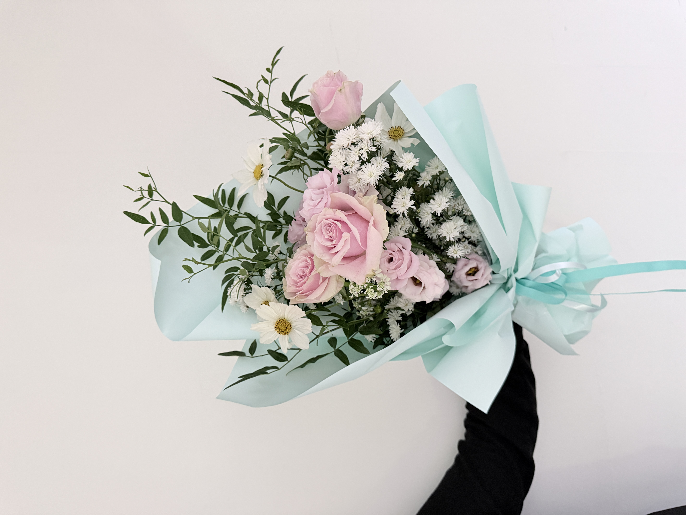
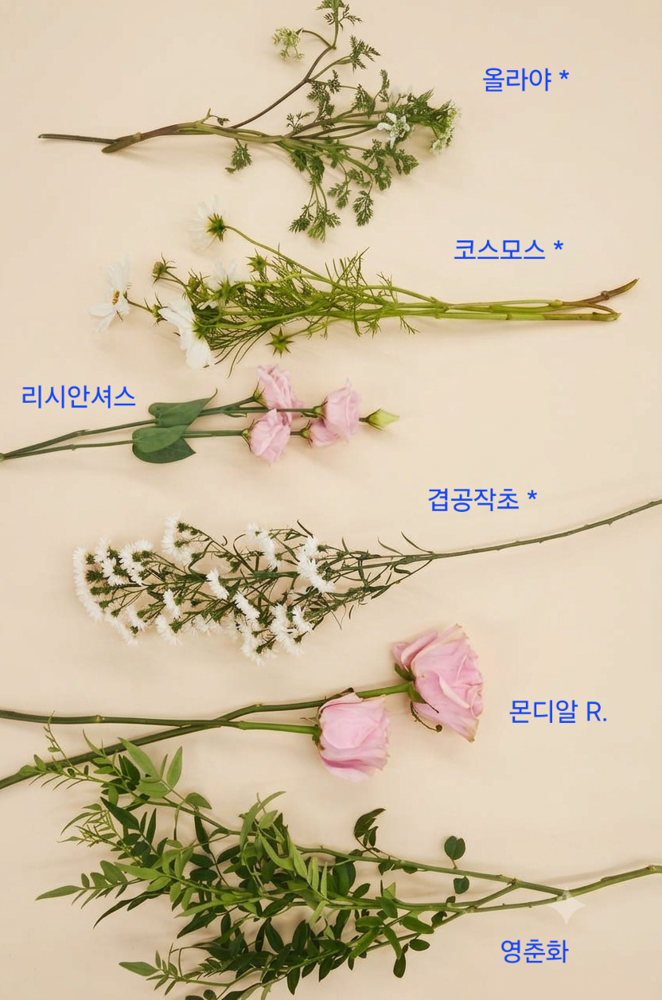
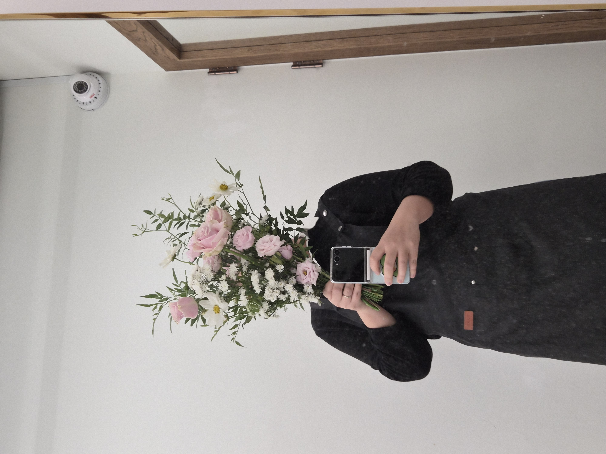
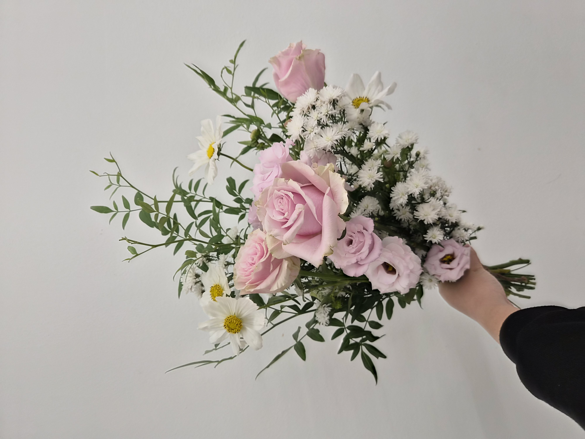
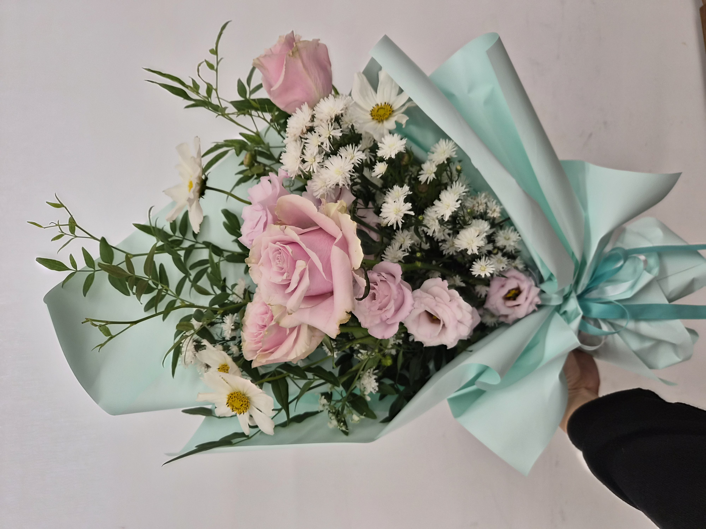

CLASS WORK · HAND-TIED
2026.10.13
GARDEN STYLE
HAND-TIED BOUQUET
庭のような流れと余白を生かしたブーケ
08 / CLASS WORK
CONCEPT
GARDEN,
AIR
& RHYTHM.
핑크 장미와 리시안셔스로 부드러운 중심을 만들고, 코스모스와 겹공작초의 작은 꽃, 올라야와 영춘화의 가벼운 선을 바깥으로 확장해 정원에서 자연스럽게 자라난 꽃을 한데 모은 듯한 인상을 만든 핸드타이드 부케입니다.
둥근 윤곽을 먼저 맞추기보다 각 소재의 높이와 방향을 다르게 두고, 꽃과 꽃 사이에 비어 있는 공간을 남겨 중심의 안정감과 외곽의 자연스러운 흐름이 함께 보이도록 구성했습니다.
ピンクのバラとトルコキキョウでやわらかな中心をつくり、 コスモスと八重咲きクジャクアスターの小花、 オルラヤとオウバイの軽いラインを外側へ広げることで、 庭に自然に咲く花を束ねたような印象にまとめました。 丸い輪郭を先に整えるのではなく、花材ごとに高さと方向を変え、 花の間に余白を残すことで中心の安定感と外側の自然な流れを両立させています。
COLOR PALETTE
色の構成
BLUSH,
WHITE,
MINT.
부드러운 블러시 핑크를 중심으로 화이트와 신선한 그린을 섞어 밝고 가벼운 정원 이미지를 만들었습니다. 코스모스의 옐로 중심은 작은 포인트가 되고, 민트 포장은 꽃의 색을 덮지 않으면서 전체를 산뜻하게 정리합니다.
やわらかなブラッシュピンクを中心に、ホワイトとフレッシュなグリーンを重ね、 明るく軽やかな庭の印象をつくりました。 コスモスの黄色い中心が小さなアクセントとなり、 ミントカラーのラッピングが花色を邪魔せず爽やかに全体を整えています。
BLUSH PINK
#E7B5C5SOFT WHITE
#F1EFE9POLLEN YELLOW
#DABF3EGARDEN GREEN
#60734DMINT AQUA
#C3E4DFMATERIALS
使用花材
몬디알 장미와 리시안셔스는 중심에 부드러운 볼륨을 만들고, 코스모스와 겹공작초는 꽃의 크기와 밀도를 가볍게 분산합니다. 올라야의 세밀한 꽃과 영춘화의 길게 뻗는 가지는 외곽에 공기와 방향을 만들어 정원식 부케 특유의 열린 실루엣을 완성합니다.
バラ ‘モンディアル’ とトルコキキョウは中心にやわらかなボリュームをつくり、 コスモスと八重咲きクジャクアスターは花の大きさと密度を軽く分散させます。 オルラヤの繊細な花と長く伸びるオウバイの枝が外側に空気と方向をつくり、 ガーデンスタイルらしい開いたシルエットを完成させています。
몬디알 장미
バラ ‘モンディアル’
리시안셔스
トルコキキョウ
코스모스
コスモス
겹공작초
八重咲きクジャクアスター
올라야
オルラヤ
영춘화
オウバイ
BLUSH · WHITE
GREEN · MINT
淡いピンクと白を基調に、
グリーンとミントを重ねた配色。

소재를 펼쳐 보면 둥근 장미와 리시안셔스의 볼륨, 코스모스의 얇고 넓은 얼굴, 겹공작초의 작은 반복, 그리고 올라야와 영춘화가 만드는 가벼운 선이 서로 다른 역할을 가지고 있다는 점이 분명해집니다.
花材を並べて見ると、バラとトルコキキョウの丸いボリューム、 コスモスの薄く広い花面、クジャクアスターの細かな反復、 オルラヤとオウバイの軽いラインがそれぞれ異なる役割を持つことが分かります。
COMPOSITION
構成とバランス
HEIGHT,
AIR,
FLOW.
장미와 리시안셔스는 비교적 낮고 밀도 있는 중심에 배치하고, 코스모스와 영춘화는 그보다 높은 위치와 바깥쪽으로 흘려 시선이 중심에서 위와 옆으로 자연스럽게 이동하도록 했습니다.
겹공작초의 작은 흰 꽃은 중심과 외곽 사이를 반복적으로 연결하고, 올라야와 영춘화는 줄기의 방향을 서로 다르게 두어 정원에서 각 식물이 제각기 자라난 듯한 불규칙한 리듬을 만듭니다.
외곽을 전부 채우지 않고 꽃 사이의 빈 공간과 그린의 선을 남겨 둥근 부케보다 훨씬 열린 실루엣을 만들었습니다. 이 여백이 가든 스타일의 자연스러움을 결정하는 중요한 요소였습니다.
バラとトルコキキョウは比較的低く密度のある中心に置き、 コスモスとオウバイをより高い位置と外側へ流すことで、 視線が中心から上と横へ自然に動くようにしました。 小さなクジャクアスターは中心と外側を繰り返しつなぎ、 オルラヤとオウバイは方向を変えて庭のような不規則なリズムをつくります。 外周を埋めすぎず余白を残すことで、開いたシルエットを意識しました。

SCALE & FLOW
LOOSE LINE,
OPEN SPACE
& BALANCE.
실제로 들었을 때는 위쪽으로 솟은 그린과 좌우로 퍼지는 꽃의 선이 부케의 폭과 높이를 크게 확장하고 있다는 점이 더 잘 보입니다. 중심은 안정적으로 잡되 외곽은 지나치게 정리하지 않아, 손에 들었을 때도 정원의 느슨한 흐름이 유지되도록 했습니다.
実際に持った状態では、上へ伸びるグリーンと左右へ広がる花のラインが、 ブーケの高さと幅を大きく広げていることがより分かります。 中心は安定させながら外側を整えすぎず、 手に持ったときにも庭のようなゆるやかな流れが残るようにしました。
FINAL VIEW
完成したかたち

포장 전에는 핑크 장미가 만드는 중심과 화이트 소화가 이어 주는 중간 밀도, 그리고 그린이 위와 바깥으로 뻗는 흐름이 가장 명확하게 보입니다. 꽃의 높이와 간격을 일정하게 맞추지 않아 자연스럽고 열린 정원형 실루엣이 만들어졌습니다.
ラッピング前は、ピンクのバラがつくる中心、白い小花がつなぐ中間の密度、 そしてグリーンが上と外へ伸びる流れが最も明確に見えます。 花の高さと間隔をそろえすぎず、自然で開いたガーデンシルエットに仕上げました。

WRAPPED DETAIL
MINT FRAME,
SOFT PINK
& GREEN.
민트 컬러 포장은 핑크와 화이트를 깨끗하게 받쳐 주면서 그린의 산뜻함을 자연스럽게 이어 줍니다. 가까이에서는 장미의 넓은 면과 작은 겹공작초, 코스모스의 열린 얼굴, 길게 뻗은 영춘화가 서로 다른 스케일로 겹쳐지는 모습이 더 선명하게 드러납니다.
ミントカラーのラッピングはピンクと白をすっきりと受け止めながら、 グリーンの爽やかさを自然につなぎます。 近くでは、バラの広い花面、小さなクジャクアスター、開いたコスモス、 長く伸びるオウバイが異なるスケールで重なる様子がより鮮明に見えます。
REFLECTION
制作を振り返って
SPACE,
RHYTHM,
GROWTH.
가든 스타일은 단순히 꽃을 자유롭게 흩어 놓는 방식이 아니라, 중심의 무게와 외곽으로 뻗는 선, 그리고 그 사이의 빈 공간을 동시에 설계해야 한다는 점을 확인한 작업입니다.
자연스러워 보이려면 오히려 높이와 방향을 의도적으로 달리하고, 작은 꽃의 반복으로 서로 떨어진 소재를 연결해야 했습니다. 중심을 과하게 채우지 않을수록 각 소재의 선이 더 잘 살아난다는 점도 인상적이었습니다.
ガーデンスタイルは単に花材を自由に散らすのではなく、 中心の重さ、外へ伸びる線、その間の余白を同時に設計する必要があると確認できた制作です。 自然に見せるためには、むしろ高さと方向を意図的に変え、 小さな花の反復で離れた素材同士をつなぐことが重要だと感じました。
중심부의 밀도를 조금 더 가볍게 조절하고, 외곽으로 뻗는 긴 선의 시작점과 방향을 더욱 과감하게 살려 깊이감 있는 가든 실루엣 만들기